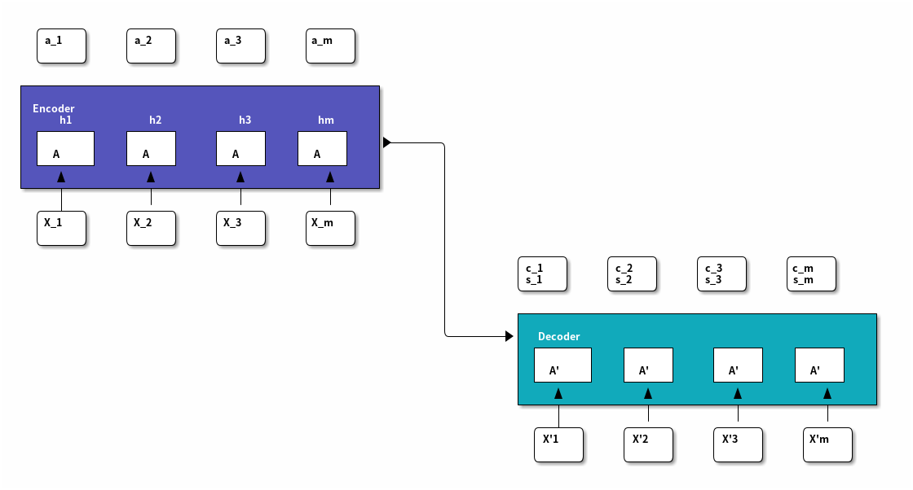

Informatik
Table of Contents
- 1. Machine Learning
- 1.1. Math for ML
- 1.1.1. Self Entropy
- 1.1.2. Information Entropy
- 1.1.3. cross Enteopy
- 1.1.4. Conditional enteopy
- 1.1.5. Gini
- 1.1.6. KL
- 1.1.7. Matrix
- 1.1.8. Eigenwertzerlegung eigende decompostion
- 1.1.9. SVD Singular value decompostion
- 1.1.10. Bayes's Rule
- 1.1.11. Kovarianz Matrix
- 1.1.12. Regularization
- 1.1.13. Error Bias-Variance-trade-off
- 1.1.14. Multi variable Gaussian distribution
- 1.1.15. Mahalanobis distance
- 1.1.16. K-fold Cross Validation
- 1.1.17. confusion matrix
- 1.1.18. Macro Micro Average
- 1.1.19. Jacobin matrix
- 1.1.20. 预剪枝和后剪枝
- 1.1.21. 属性有连续值和缺失值
- 1.2. activation function
- 1.3. example bagging
- 1.4. Boosting
- 1.5. gradient decent
- 1.6. Ordinary Least Squares(OLS)
- 1.7. Lasso regression
- 1.8. Ridge regression
- 1.9. Elastic Net regression
- 1.10. Decision List
- 1.11. linear regression
- 1.12. linear Discriminate Analysis
- 1.13. Principe Component Analysis
- 1.14. K-Nearest Neighbor classification
- 1.15. Decision tree classification
- 1.16. Random Forest classification
- 1.17. Naivi Bayes's classification
- 1.18. logistic regression classification
- 1.19. Support Vector Machine classification
- 1.20. Neural network classification
- 1.21. K-Means Cluster
- 1.22. EM algorithms for Gaussian Mixture model Cluster
- 1.23. DBSCAN Cluster
- 1.24. Single Linkage Clustering Cluster
- 1.1. Math for ML
- 2. Deep Learing
- 3. NLP
1 Machine Learning
1.1 Math for ML
1.1.1 Self Entropy
One thing happens, how much information can be persent. how meanful it is \[I(p_{i}) = -\log(p_{i})\]
1.1.2 Information Entropy
\[H(p) = E_{x\backsim p}[I(p_i)] = -E_{x\backsim p}[\log(p_{i})]\] \[H(p) = -\sum^{n}_{i=1} p(x_{i}) \log p(x_{i})\] \[H(p) = - \int_{x} p(x)\log p(x) dx\]
1.1.3 cross Enteopy
\[H(p, q) = E_{x\backsim p}[I(q_i)] = -E_{x\backsim p}[\log(q_{i})]\] \[H(p, q) = -\sum^{n}_{i=1} p(x_{i}) \log q(x_{i})\] \[H(p, q) = - \int_{x} p(x)\log q(x) dx\]
1.1.4 Conditional enteopy
Under the condition than Y has been happened, estimate the Enteopy of X to be happened \[H(X|Y) = \sum^{n}_{i=1}p_{i}H(X|Y=y_{i})\] \[H(X|Y) = H(X,Y)-H(X)\]
1.1.5 Gini
吉尼系数 \[ Gini(D) = \sum^{|y|}_{k=1}\sum_{k^{'}\not = k} p_{k}p_{k^{'}} = 1- \sum^{|y|}_{k=1}p_{k}^{2}\]
1.1.6 KL
the difference between p and q \[KL(p||q) = E_{x \backsim p} [\frac{ \log p(x)}{ \log q(x)}] = \sum^{n}_{i=1} p(x_{i}) \frac{ \log p(x)}{ \log q(x)} \] \[KL(p||q) = H(p, q) - H(p)\]
1.1.7 Matrix
- Conjugate transpose Matrix
\[ A^{*} = (\bar{A})^{T} = \bar{A^{T}}\] 共轭转置矩阵, 先共轭再转置，还是先转置再共轭都可以。
- Normal Matrix
\[ A^{*}A = A A^{*}\] 正定矩阵, 是转置和本身满足交换律 \[ A = URDU^{-1} \] 可酉变换
- Unitary Matrix
\[ A^{*}A = A A^{*} = I \] 酉矩阵，是正定矩阵, 即转置和本身满足交换律，而且等于 I
- orthogonal matrix
实数酉矩阵
\[ {\displaystyle Q^{T}=Q^{-1}\Leftrightarrow Q^{T}Q=QQ^{T}=I} \] 得该矩阵的转置矩阵为其逆矩阵
- Hermitian matrix
\[ A = A^{H}\], \(a_{i,j} = \bar{a_{j,i}}\) 共轭对称 埃尔米特矩阵，厄米特矩阵，厄米矩阵,所有元素对称出共轭
1.1.8 Eigenwertzerlegung eigende decompostion
对于矩阵求特征值特征向量，特征值分解，但是要求必须是方阵，如果不是，先 要转换： A = a*a.T
\[ A=UBU^T \]
import numpy as np a = np.mat([[1,2,3,4],[1,1,1,1]]) A = a*a.T B, U = np.linalg.eig(A) print("eigenvalue of A : ") print(B) print("eigenvalue of a :(should be equal to the following) ") print(np.sqrt(B)) print("eigenvactor : ") print(U)
1.1.9 SVD Singular value decompostion
但是对于一般矩阵，不是方阵，可以奇异值分解： \[ a = UBV^T , a^{t} = VBU^{T} \] \[ A = aa^{T} = UB^{2}U^{T}\] \[ A^{'}=a^{T}a=VB^{2}V^{T}\]
import numpy as np a = np.mat([[1,2,3,4],[1,1,1,1]]) U, B, Vt = np.linalg.svd(a) print("left eigenvalue : ") print(U) print("eigenvactor of a : ") print(B) print("right eigenvalue : ") print(Vt)
1.1.10 Bayes's Rule
if x and y are independent: \[ p(x,y) = p(y)p(x) = p(x) p(y) = p(y,x) \]
条件概率： 条件概率 = 联合概率/边缘概率 先验概率和后验概率都是条件概率，但是条件已知是先验
\[ P(y|x) = \frac{ P(x,y)}{P(x)}\]
全概率公式
\[ p(y) = \sum_{i=1}^{n} p(y,x_{i}) \]
贝叶斯公式
\[ P(AB)=P(BA) \] \[ P(y|x)P(x) = P(x|y)P(y)\] \[ P(y|x) = \frac{ P(x|y) P(y)}{P(x)}\]
贝叶斯公式 + 全概率公式 + 条件概率\begin{eqnarray*} P(A|B) &= \frac{P(B|A)P(A)}{P(B)} \\ &= \frac{P(B|A)P(A)}{\sum_{i=1}^{n} p(B,A_{i})} \\ &= \frac{P(B|A)P(A)}{\sum_{i=1}^{n} P(B|A_{i})P(A)} \\ \end{eqnarray*}
1.1.11 Kovarianz Matrix
for i = {1…n}, \(x_{i}\) is a random variable, which belongs to Gaussian distribution
set \[ X = \left( \begin{aligned} x_{1} \\ x_{2}\\ . \\. \\x_{n} \end{aligned}\right) \]
\[ \bar{X} = \left( \begin{aligned} \bar{x}_{1} \\ \bar{x}_{2}\\ . \\. \\ \bar{x}_{n} \end{aligned} \right) \]
co-variance matrix \(\Sigma = E [(X-\bar{X})(X-\bar{X})^{T} ]\)
\begin{equation} \Sigma = \left( \begin{array}{c} x_{1}-\bar{x}_{1} \\ x_{2}-\bar{x}_{2} \\ x_{3}-\bar{x}_{3} \\ .. \\ x_{n}-\bar{x}_{n} \end{array} \right) \left( \begin{array}{ccccc} x_{1}-\bar{x}_{1} & x_{2}-\bar{x}_{2} & x_{3}-\bar{x}_{3} & .. & x_{n}-\bar{x}_{n} \end{array} \right) \end{equation}对角线上是对应元素的方差，其他是相对于两个元素的协方差
1.1.12 Regularization
L Regularization \(x_{i}\) is the weight in network, it's a scalar
\[||x||_{p} := (\sum^{n}_{i=1}|x_{i}|^{p})^{\frac{1}{p}}\] \[||x||_{1} := \sum^{n}_{i=1}|x_{i}|\] \[||x||_{2} := (\sum^{n}_{i=1}|x_{i}|^{2})^{\frac{1}{2}}\]
\[ Loss = \frac{1}{2}\sum^{N}_{i=1}(y_{i}-w^{t}\phi(x_{i}))^{2}+\frac{\lambda}{2}\sum^{M}_{j=1}|w_{j}|^{q} \]
| N | example number |
| M | Eigenschaften Number, Diemension number |
| L0 | 控制网络中的非零权重 |
| L1 | 网络中的所有元素的绝对值之和,促使网络生成更多的稀疏矩阵 |
| L2 | 网络中的所有元素平方和,促使网络生成小比重的权值 |
| w | w1, w2 |
| q=1 | l1 regularization |
| q=2 | l2 regularization |
| λ | learning rate |
| \(\sum^{N}_{i=1}(y_{i}-w^{t}\phi(x_{i}))^{2}\) | 依据w的同心圆 |
| \(\sum^{M}_{j=1}w_{j}^{q}\) | q=1, 菱形， q=2, 圆形 |
Loss 要最小，part1 刚好和 part2 相接，l1会在坐标轴上，所以如果有较小分 量，会被直接设为0
1.1.13 Error Bias-Variance-trade-off
Error = Bias + Variance + noise
| Bias | 偏差 | 欠拟合 | 发挥，观测等主观因素影响 | |
| Variance | 方差 | 过过拟合 | 稳定性，模型的构建决定 | |
| noise | 噪音 | 统难度 |
1.1.14 Multi variable Gaussian distribution
seeing the link 知乎
\[ {\displaystyle f_{\mathbf {X} }(x_{1},\ldots ,x_{k})={\frac {\exp \left(-{\frac {1}{2}}({\mathbf {x} }-{\boldsymbol {\mu }})^{\mathrm {T} }{\boldsymbol {\Sigma }}^{-1}({\mathbf {x} }-{\boldsymbol {\mu }})\right)}{\sqrt {(2\pi )^{k}|{\boldsymbol {\Sigma }}|}}}} \]
def gaussian(x,mean,cov): dim = np.shape(cov)[0] #维度 #之所以加入单位矩阵是为了防止行列式为0的情况 covdet = np.linalg.det(cov+np.eye(dim)*0.01) #协方差矩阵的行列式 covinv = np.linalg.inv(cov+np.eye(dim)*0.01) #协方差矩阵的逆 xdiff = x - mean #概率密度 prob = 1.0/np.power(2*np.pi,1.0*dim/2)/np.sqrt(np.abs(covdet))*np.exp(-1.0/2*np.dot(np.dot(xdiff,covinv),xdiff)) return prob
1.1.15 Mahalanobis distance
\[ \Delta = \left(-{\frac {1}{2}}({\mathbf {x} }-{\boldsymbol {\mu }})^{\mathrm {T} }{\boldsymbol {\Sigma }}^{-1}({\mathbf {x} }-{\boldsymbol {\mu }})\right) \] \[ \Sigma = \sum U \Lambda U^{T} \] \[ \Sigma^{-1} = \sum U \Lambda^{-1} U^{T} \]
\[ \Delta = -{\frac {1}{2}}({\mathbf {x} }-{\boldsymbol {\mu }})^{\mathrm {T} }{\boldsymbol {\Sigma }}^{-1}({\mathbf {x} }-{\boldsymbol {\mu }}) = -{\frac {1}{2}}({\mathbf {x} }-{\boldsymbol {\mu }})^{\mathrm {T} } U \Lambda^{-1} U^{T}({\mathbf {x} }-{\boldsymbol {\mu }}) \] 马氏距离所使用的变换 : \[ Z = U^{T}(X - \mu) \],
\[ D = \sqrt{ZZ^{T}} \] 关于新的坐标，U 是变换的旋转，\(\Lambda\) 是基底的延伸，\((x-\mu)\) 是在其 上的投影，此后，在新坐标上，即为多变量，标准，不相关高斯分布
1.1.16 K-fold Cross Validation
| N | total examples |
| K | number of sub-fold |
| m | number of each sub-fold |
| big K | small bias, with over fitting, big variance |
| small K | big bias, without fitting, low variance |
1.1.17 confusion matrix
| Actually Ture | Actually False | |
| predict Positive | TP | FP |
| predict Negative | FN | TN |
- Ture Positive Rate (recall)
namely, Ture Positive Rate, y axes of ROC
\[ Sensitivity = \frac{TP}{TP+FN} \]
- False Postive Rate
namely, false Position, x axes of ROC
\[ 1 - Sensitivity = \frac{FP}{FP + TN} \]
- ROC Receivert Operator Characteristic
under the acceptable x (1 - Sensitivity) , we want the best y (Sensitivity). from side to side is all classifed to Positive to all classifed to negative
- AUC Area under the Curve
je mehr Fachsgebiet, desto besser for the Method, we use this target to choice our Method
- F1
harmonic mean of recall and precision \[ F_{1} = \frac{1}{2} \cdot (\frac{1}{P}+\frac{1}{R})\] \[ F_{\beta} = \frac{1}{\beta^{2}} \cdot (\frac{\beta^{2}}{P}+\frac{1}{R})\]
关联性属性 ： 高中低 （3,2,1） 非关联性属性： 猪狗羊 （(1,0,0), (0,1,0),(0,0,1)）
1.1.18 Macro Micro Average
This is for non-binary classification at frist calcalete for all feather the confusion matrix als binary classification
1.1.19 Jacobin matrix
for \[ Y_{m} = f(X_{n}), Y =(y_{1}, y_{2}, y_{3}....y_{m}), X = (x_{1} ,x_{2}....x_{n}) \] \[ d_{Y} = J d_{x}\], \[ {\displaystyle \mathbf {J} ={\begin{bmatrix}{\dfrac {\partial \mathbf {f} }{\partial x_{1}}}&\cdots &{\dfrac {\partial \mathbf {f} }{\partial x_{n}}}\end{bmatrix}}={\begin{bmatrix}{\dfrac {\partial f_{1}}{\partial x_{1}}}&\cdots &{\dfrac {\partial f_{1}}{\partial x_{n}}}\\\vdots &\ddots &\vdots \\{\dfrac {\partial f_{m}}{\partial x_{1}}}&\cdots &{\dfrac {\partial f_{m}}{\partial x_{n}}}\end{bmatrix}}} \] 由球坐标系到直角坐标系的转化由 F: ℝ+ × [0, π] × [0, 2π) → ℝ3 函数给出， 其分量为： \[ {\displaystyle {\begin{aligned}x&=r\sin \theta \cos \varphi ;\\y&=r\sin \theta \sin \varphi ;\\z&=r\cos \theta .\end{aligned}}} \] 此坐标变换的雅可比矩阵是 \[ {\displaystyle \mathbf {J} _{\mathbf {F} }(r,\theta ,\varphi )={\begin{bmatrix}{\dfrac {\partial x}{\partial r}}&{\dfrac {\partial x}{\partial \theta }}&{\dfrac {\partial x}{\partial \varphi }}\\[1em]{\dfrac {\partial y}{\partial r}}&{\dfrac {\partial y}{\partial \theta }}&{\dfrac {\partial y}{\partial \varphi }}\\[1em]{\dfrac {\partial z}{\partial r}}&{\dfrac {\partial z}{\partial \theta }}&{\dfrac {\partial z}{\partial \varphi }}\end{bmatrix}}={\begin{bmatrix}\sin \theta \cos \varphi &r\cos \theta \cos \varphi &-r\sin \theta \sin \varphi \\\sin \theta \sin \varphi &r\cos \theta \sin \varphi &r\sin \theta \cos \varphi \\\cos \theta &-r\sin \theta &0\end{bmatrix}}.} \] 其雅可比行列式为 r2 sin θ，由于 dV = dx dy dz，如果做变数变换的话其体 积元(Volume element)，dV，会变成：dV = r2 sin θ dr dθ dφ。
1.1.20 预剪枝和后剪枝
在利用训练集的最大信息增益确定划分属性后，用验证集来检验划分，如果验证 集的信息熵增加，（泛化结果不好)否定此次划分，设为叶节点
后剪枝是在这个树完成后，用验证集去检验每一个内节点，从下到上，如果去掉 该划分有更小的信息熵，则废除该划分。
1.1.21 属性有连续值和缺失值
连续值离散化：排列该属性的所有取值n个，在n-1个区间中去中间值为离散值， 遍历所有离散值，找到最大信息增益的离散值，作二分。
缺失值，取出该属性的非缺失子集，再配以相应的比率计算信息增益，处理和以 前一样。如果选出的划分属性有缺失值，则给划分不作用到缺失样本，复制到每 个划分子集
1.2 activation function
1.2.1 activation
输出为实数空间或某个区间， 连续变化。直接有输出值和真实值比较
1.2.2 Sigmoid
\[ Sigmoid(x) = \frac{1}{1+e^{-x}}\]
导数：\[ \sigma'(x) = \sigma(x)(1-\sigma(x))\]
1.2.3 ReLU
\[ Relu(x) = \begin{cases} x& x >=0 \\ 0& x < 0 \end{cases}\]
\[ Relu(x) = max(0,x)\]
1.2.4 LeakyReLU
\[ LeakyReLU(x) = \begin{cases}
x& x >=0 \\
px& x <0, 0
1.2.5 Tanh
\[ tanh(x) = \frac{e^{x}-e^{-x}}{e^{x}+e^{-x}}\] \[ tanh(x) = 2.sigmoid(2x)-1\] 导数：\[\tanh'(x) = 1- \tanh^{2}(x)\]
1.2.6 MSE
\[ \mathcal{L} = MSE(y, o) = \frac{1}{d_{out}}\sum_{i=1}^{d_{out}}(y_{i}-o^{i})^{2}\] 导数 ：\[ \frac{\partial \mathcal{L}}{\partial o_{i}}= (o_{i}-y_{i})\]
1.2.7 inf entropy
\[ H(p) = -\sum_{i}P(i)\log_{2}^{P_{i}}\]
1.2.8 softmax
\[ p_{z_{i}} = \frac{e^{z_{i}}}{\sum_{j}e^{z_{j}}}\] 所有种类的概率之和为1 导数: \[ \frac{ \partial p_{z_{i}}}{\partial z_{j}} = \begin{cases} p_{i}(1-p_{j}) & if i =j \\ -p_{i}p_{j} & if \neq j \end{cases}\]
1.2.9 cross entropy
在计算交叉熵时， 一般是和 softmax 函数一起使用的 \[ H(p||q) = -\sum_{i} p(i) \log_{2}^{q_{i}}\] \[H(p||q) = H(p) + D_{KL}(p||q)\]
for One-hot coding \[ H(p||q) = D_{KL}(p||q) = \sum_{i}y_{i}log(\frac{y_{j}}{o_{j}}) = 1 \cdot \log\frac{1}{o_{i}} + \sum_{j!=i}0 \cdot \log \frac{0}{o_{j}} = -\log o_{i}\] \(o_i\) 为1 时，预测正确，交叉熵为0。 导数： \[ \mathcal{L} = -\sum_{k}y_{k}\log(p_{k})\] \[\begin{aligned} \frac{\partial \mathcal{L}}{\partial z_{i}} & = -\sum_{k} y_{k} \frac{\partial \log(p_{k})}{\partial z_{i}} \\ &= -\sum_{k} y_{k} \frac{\partial \log(p_{k})}{\partial p_{k}} \cdot \frac{\partial p_{k}}{\partial z_{i}} \\ &= -\sum_{k} y_{k} \frac{1}{\partial p_{k}} \cdot \frac{\partial p_{k}}{\partial z_{i}} \\ \end{aligned} \]
用上面 softmax 的导数结果，分为k=i 和k!=i两种情况 \[ \frac{\partial \mathcal{L}}{z_{i}}=p_{i}-y_{i}\]
\[C = - \frac{1}{n}\sum_{x}[y\cdot \ln(a) + (1-y)\cdot \ln(1-a)]\] \[\frac{\partial C}{\partial w} = X(a-y)\] \[\frac{\partial C}{\partial b} = a-y\]
This is why Cross Enterpy can train the loss very fast. if a is far away from y, the update will be its difference
1.3 example bagging
多次放回抽样，用不同抽样的数据集在多棵树上并行计算，
| More Tree | Bias remained | Variance reduce to limit |
所以刚开始选择偏差小，方差大的强模型
1.4 Boosting
固定数据集，在多个串行的模型上顺序计算，模型间强相关，防止过拟合，用弱 相关模型
1.5 gradient decent
当数据点很多是，正则化方法计算量将非常大，此时较多使用梯度下降
sklearn API
import numpy as np import random from sklearn import linear_model testsize = 5 x = np.array([a for a in range(100)]) onesx = np.ones(x.shape) X = np.c_[x, 2*x, onesx] y = np.array([a*5 + 20 + random.randint(0,3) for a in range(100)]) print("the X shape is {}, and y shape is {}".format(X.shape, y.shape)) # Sklearn API reg = linear_model.LinearRegression() model = reg.fit(X,y) print("Sklearn: the weith is {}, and the intercept is {}".format(model.coef_[:-1] ,model.intercept_)) print("the predect of 3 ele is {}".format(model.predict(np.c_[np.arange(testsize), np.arange(testsize),np.ones(testsize)]))) # manual def featureNormalize(X): (m,n) = X.shape X_norm = X mu = np.zeros(n); sigma = np.zeros(n); for i in range(n): mu[i] = np.mean(X[:,i]) sigma[i] = np.std(X[:,i]) X_norm[:,i] = (X_norm[:,i]-mu[i])/sigma[i] return X_norm def computeCost(X, y, theta): return np.sum((np.dot(X,theta) -y)**2)/(2*len(y)); def gradientDescent(X, y, theta, alpha, num_iters): m = len(y) J_history = np.zeros(num_iters); theta_len = len(theta); for num_iter in range(num_iters): theta = theta - (alpha/m)*np.dot(X.T,(np.dot(X,theta).reshape(-1)-y)) J_history[num_iter] = computeCost(X, y, theta) return theta, J_history alpha = 0.0001 num_iters = 400000 theta = np.zeros(2+1) theta, J_history = gradientDescent(X, y, theta, alpha, num_iters) print("Greadient decent: the weight is {}, and the intercept is {}".format(theta[:-1],theta[-1])) print("the predect of 3 ele is {}".format(np.dot(np.c_[np.arange(testsize), np.arange(testsize),np.ones(testsize)], theta)))
1.6 Ordinary Least Squares(OLS)
1.6.1 正规化方程
正则化方程的推导，用高斯分布的多变量分布的Maxisum likelihood,能一起求得对weight和bias值 :
但是要添加一列1到 train 和 test，至于在前面还是后面有点怪异。
目前认为，在后面的话，多变量和参数可以按需求访问
Loss function: \[ J = \frac{1}{2m}\sum(h_{\theta}(x_{i})-y_{i})^{2}\] \[ \sigma = \frac{1}{2m}(X \theta -y)^{T} (X \theta -y)\] 对\(\theta\) 求导，并令其为0， \[\theta = (X^{T}X)^{-1}X^{T}y \] 但是要求\(X^{T}X\) 必须可逆。
1.6.2 正则化正规化方程
\[w = (\Phi^{T}\Phi + \lambda I)^{-1} \Phi^{T}y \]
import numpy as np import random from sklearn import linear_model testsize = 5 x = np.array([a for a in range(100)]) onesx = np.ones(x.shape) X = np.c_[x,onesx] y = np.array([a*5 + 20 + random.randint(0,3) for a in range(100)]) print("the X shape is {}, and y shape is {}".format(X.shape, y.shape)) # weight = np.dot(np.dot(np.linalg.pinv(np.dot(X.T, X)), X.T), y) weight = np.linalg.inv(X.T.dot(X)).dot(X.T).dot(y) print("OLS : the weight is{}, and the bais is {} ".format(weight[:-1], weight[-1])) print("the predect of 5 ele is {}".format(np.dot(np.c_[np.arange(testsize),np.ones(testsize)], weight)))
也可以是对变量 with multi variables
import numpy as np import random from sklearn import linear_model testsize = 5 x = np.array([a for a in range(100)]) onesx = np.ones(x.shape) X = np.c_[onesx, x, 2*x] y = np.array([a*5 + 20 + random.randint(0,3) for a in range(100)]) print("the X shape is {}, and y shape is {}".format(X.shape, y.shape)) # ordinary least squares (正规化方法） weight = np.dot(np.dot(np.linalg.pinv(np.dot(X.T, X)), X.T), y) print("OLS : the weight is{}, and the bais is {} ".format(weight[:-1], weight[-1])) print("the predect of 5 ele is {}".format(np.dot(np.c_[np.arange(testsize), np.arange(testsize),np.ones(testsize)], weight)))
1.7 Lasso regression
we reform the Loss function from OLS \[ L = \frac{1}{2m}\sum(h_{\theta}(x_{i})-y_{i})^{2}\] as \[ \frac{1}{2N}\sum_{i=1}^{N}(H_{\theta}(x^{i}) -y^{i})^{2}\] and add the regularity term (Manhattan norm) of Lasso regression \[L_{1} = \frac{\lambda}{2}|\theta|\] put all together, for Lasso regession: \[ L = \frac{1}{2m}\sum(h_{\theta}(x_{i})-y_{i})^{2} + \frac{\lambda}{2}|\theta|\]
the minimun of \(L\) should be a the interaction of the first term, which is the solution of OLS and the second term, which is the Lasso regularity term.
This reduce many feather coefficient to be 0,
1.8 Ridge regression
we reform the Loss function from OLS \[ L = \frac{1}{2m}\sum(h_{\theta}(x_{i})-y_{i})^{2}\] as \[ \frac{1}{2N}\sum_{i=1}^{N}(H_{\theta}(x^{i}) -y^{i})^{2}\] and add the regularity term of (Euclidean norm) Lasso regression \[L_{1} = \frac{\lambda}{2}||\theta||^{2}\] put all together, for Lasso regession: \[ L = \frac{1}{2m}\sum(h_{\theta}(x_{i})-y_{i})^{2} + \frac{\lambda}{2}||\theta||^{2}\]
the minimun of \(L\) should be a the interaction of the first term, which is the solution of OLS and the second term, which is the Ridge regularity term.
This reduce many feather coefficient to be as small as possible
1.9 Elastic Net regression
combinate Lasso regession and Ridge regression
\[ L = \frac{1}{2m}\sum(h_{\theta}(x_{i})-y_{i})^{2} + p\cdot \frac{\lambda}{2}|\theta| + \frac{1-p}{2} \cdot \frac{\lambda}{2}||\theta||^{2}\]
1.10 Decision List
(f1,v1),(f2,v2)….(fr,vr) fi is a term in CNF, vi belongs {0,1}, and the last term fr is always true. and each term can be viewed as if else extended. if fi is matched, so vi is its value.
for 0<k<n, k-CNF and k-DNF are proper
1.11 linear regression
1.12 linear Discriminate Analysis
1.12.1 Fisher's linear discriminant
输入为j=0，1类样本，每类分别 \(N_{j}\) 个样本 \(\mu_j = \frac{1}{N_{j}} \sum x\) \(x \in N_{j}\) \(\Sigma_{j} = \sum(x-\mu_{j})(x-\mu_{j})^{T}\), \(x \in N_{j}\)
\(argmax(J) = \frac{\omega^{T} (\mu_0-\mu_1)(\mu_0-\mu_1)^T \omega}{\omega^T(\Sigma_0+\Sigma_1)\omega } = \frac{\omega^{T} S_{b} \omega}{\omega^T S_{w} \omega }\)
1.12.2 Fisher's linear discriminant with Kernel method
\[ J(w) = \frac{(m_{2}-m_{1})^{2}}{s_{1}^{2} + s_{2}^{2}} = \frac{w^{T}(m_{2}-m_{1})^{T}(m_{2}-m_{1}) w}{ w^{T}(s_{1}^{2} + s_{2}^{2})w}\]
\[ w = \sum^{L}_{k=1} \alpha_{k} \phi(x_{k}) \]
\[ m = \frac{1}{L_{i}} \sum^{Li}_{n=1}\phi(x_{n}^{i})\]
\[ w^{T} m_{i} = \alpha^{T}M_{i}\]
\[ M_{i} = \frac{1}{L_{i}}\sum^{L}_{k=1}\sum^{L_{i}}_{n=1} k(x_{k},x_{n}^{i})\]
Numerator:\[w^{t}S_{B}w = \alpha^{T}M\alpha\] Denominator: \[ w^{T}S_{w}w = \alpha^{T} N \alpha\] \[ N = \sum_{i=1,2}K_{i}(I-1/L)K_{i}^{T} \] \[ (K_{i})_{n,m} = k(x_{n}, x_{m}^{i})\]
1.12.3 Probabilistic Generative Model
用贝叶斯定理求出每个可能的概率，再取最大的值
one two class case
\[ P(C_{1}|x) = \frac{P(C_{1}|x)P(C_{1})}{P(C_{1}|x)P(C_{1}) + P(C_{2}|x)P(C_{2})} = \frac{1}{1+exp(log \frac{P(C_{1}|x)P(C_{1})}{P(C_{2}|x)P(C_{2})} )}\] 即可以 Logistic sigmoid 函数求解
multi class case
\[P(C_{k}|x) = \frac{P(x|C_{k})P(C_{k})}{\sum_{j} P(x|C_{j})P(C_{j})}\]
即可以用 Softmax funtion 来求解
1.12.4 Probabilistic Discriminant Model
Better predictive performance if assumptions about class-conditional distributions not correct.
和 generative model 一样求解，同样也有二分和多分类，但是该类问题设为 logical regression, See logical regression
1.13 Principe Component Analysis
1.13.1 PCA Algorithms
将原来的数据坐标进行线性组合，组成新的坐标基底，让数据在新基底 上投影最小化，以去除，压缩该些维度
- 将数据中心化
- 求出数据在所有特性的协方差矩阵
- 如果矩阵是方阵，则可以直接特征值分解
- 如果矩阵不是方阵，则先乘以转置，再特征值分解，注意此时求得特征值要开方
- 如果不是方阵，也可以直接奇异值分解
- 取出前面的需要的维度，多余的被压缩了
1.13.2 Probabilistic generative model for PCA
State the probabilistic generative model underlying Probabilistic PCA with a K-dimensional latent space and observations \(x\in R^{D}\) . Define all three random variables and their distribution.
Hidden Variable z in K-dimension from probabilistic generative PCA: we can transfer z into standard gaussian distribution, \[p(\vec{z}) = N(0, I), \vec{z} \in R^{K}, \vec{z} \sim N(0, I)\]
observation variable x in D-dimension giving z: \[p(\vec{x}|\vec{z}) = N(\vec{W}\vec{z} + u, \sigma^{2}I), \vec{x} \in R^{D}\] \[\vec{x} = Wz + u + \epsilon, \epsilon \sim N(0, \sigma^{2}I)\]
So, \(p(x) = \int p(x|z)p(z)dz\) \[E(x) = E(Z + u + \epsilon) = u\] \[Cove[x] = E[(Wz + u + \epsilon)(Wz + u + \epsilon)^{T}] = E(W^{T}W) + E(\epsilon \epsilon^{T}) = WW^{T} + \sigma^{2}I\]
\[ x \sim N(u, Cov[x])\]
1.14 K-Nearest Neighbor classification
This is based on the idea that instances of the same class are close to each othera
1.14.1 Algorithms
selecting the k nearest neighbor from the new instance, and leabel it as the majority target from k nearest neighbor instance
1.15 Decision tree classification
to find the "most informative feature"
1.15.1 Algorithms
在训练集内以最大信息增益来确定划分属性，在各个子区内再重复剩下的属性 信息熵增益 = Entropy - conditional Entropy \[ Gain(D,a) = H(D)-\sum^{V}_{v=1}\frac{|D^{v}|}{|D|}H(D^{v}) \]
\[Gain(D,a) = H(D) - H(D|a)\]
For all remained feathers, get the biggest Gain(D, a) for one feather, and using this feather as Criteria for the classification. over this again and again
1.16 Random Forest classification
combining multiple decision trees into a single classifier. Random Forest = Decision Tree + Bagging + random Eigenschaften
| More deeper | Bias reduce |
| More Eigenschaft | Bias reduce |
1.16.1 algorithms on decision tree
1, examples randomization for training 2, features randomization for training
1.17 Naivi Bayes's classification
\[P(y|x_{1},x_{2},,x_{i}) = \frac{P(x_{1},x_{2},,x_{i}|y) P(y)}{P(x_{1},x_{2},,x_{i})}\]
\[P(y|x_{1},x_{2},,x_{i}) \varpropto P(x_{1},x_{2},,x_{i}|y) P(y) = \prod^{i}_{k=1}P(x_{k}|y)P(y)\]
\[P(\bar{y}|x_{1},x_{2},,x_{i}) \varpropto P(x_{1},x_{2},,x_{i}|\bar{y}) P(\bar{y}) = \prod^{i}_{k=1}P(x_{k}|\bar{y})P(\bar{y})\]
For \(\prod^{i}_{k=i}P(x_{k}|y)\) can be calcaleted with Multinomial Navie Bayes and Graussian Navie Bayes, later one is better for continuons examples
假设各个属性完全独立的条件下 要计算在某些条件下某个事件出现的概率（分数）等于 在每个条件下该事件发生的条件概率的连乘再乘以该事件发生的总概率 再计算在同样的条件下该事件不出现的概率，再归一化 最后谁大选谁（注意样本不足引起的某属性的条件为零）
1.18 logistic regression classification
1.18.1 Odd
\[Odd(x) = \frac{p_{x}}{1-p_{x}}\], which is the probability of x happen to it not happen
fit logit with linear regression: \(logit(P)=W^{T}X\)
\[Odd(x)= \frac{P(X=x)}{1-P(X=x)} = e^{W^{T}x}\]
1.18.2 Odd ratio
Odd ratio of \(X_{i}\): \[Odd Ratio(X_{i}) = e^{W_{i}}\]
if Odd ratio eqaul 2, means when feather x increase by one, Odd will increase 2.
if Odd ratio bigger than one, Odd increase if x increase if Odd ratio smaller than one, Odd decrease if x increase
1.18.3 algorithms
Logistic regression tries to estimate the logarithm of odds that an instance belongs to a class i.e., that is nothing else but the logarithm of the odds that the instance is of that class.
\[Logit(P(X=x)) = \ln (\frac{P(X=x)}{P(X!=x)}) = \ln (\frac{P(X=x)}{1-P(X=x)})\]
\[P(X=x) = \frac{1}{1+e^{-W^{T}X}}\] This is also the same form of sigmoid function 用 logical sigmoid function 来作二分类判断，检验概率是否过半
1.19 Support Vector Machine classification
1.19.1 without soft margin
对于点的划分，由decision theory: \[\vec{w}\vec{u} +c \ge 0\] 距此线一个单位对点标注 \[\vec{w}{x_{+}}+b \ge 1\] then y = \[\vec{w}{x_{-}}+b \le 1\] then y = -1 So, \[y(\vec{w}x+b) -1 \ge 0\] 最大化标+点和标-点的距离： \[D_{max} = (x_{+}-x_{1})\frac{\vec{w}}{||w||} = \frac{2}{||w||}\] 等价于最小化\(\frac{1}{2}||w||^{2}\), 再加上约束条件 \[L= \frac{1}{2}||w||^{2} -\sum \alpha_{i}[y_{i}(\vec{w}\vec{x}+b)-1]\] 设L对w和b的偏导为0，\(\vec{w} = \sum \alpha_{i}x_{i}y_{i}\),\(\sum \alpha_{i}y_{i}=0\). 再代回L，\[L=\sum \alpha_{i} - \frac{1}{2} \sum \sum \alpha_{i} \alpha_{j} y_{i} y_{j}(x_{i}x_{j})\]
1.19.2 with soft margin
对于不能绝对线性分割的，可以允许某些点进入空白分割区域（从-1到1的区域）
| slack variable | \(\epsilon\) | \(t_n y(x_n) \ge 1-\epsilon_n\) | \(\epsilon > 0\) |
| Controls trade-off between slack and margin | C | \(C= \infty\), if misclassified | \(C \sum \epsilon_n\) |
this L satisfied the KKT condition, and can be solved.
| good classified | a = 0 | ε = 0 | C = 0 |
| on the margin | a < C | ε = 0 | |
| violate the margin | a = C | ε > 0 | |
| misclassified | ε > 1 | \(C = \infty\) |
1.19.3 kernel function
high dimension separable
1.20 Neural network classification
1.20.1 Backpropagation
- 感知机
对x的向后更正，\(x^{'}= x - \eta \cdot \frac{dy}{dx}\). 对于感知机的传递功能，\(y = w^{T}x + b\). 由于感知机没有激活函数，所以直接对\[\mathcal{L} = \frac{1}{n} \sum^{n}_{i=1}(w\cdot x^{i} +b -y^{i})^{2}\]. \[ \frac{\partial \mathcal{L}}{\partial w} = \frac{2}{n} \sum^{n}_{i=1}(wx^{i}+b-y^{i})x^{i}\] \[ \frac{\partial \mathcal{L}}{\partial b}= \frac{2}{n}\sum^{n}_{i=1}(wx^{i}+b -y^{i})\]
- 多层神经网络
而对于多层神经网络，\(z = w^{T}x + b\), \(\frac{\partial z}{\partial w} =x\), \(\frac{\partial z}{\partial b} = 1\). 每层之间具有激活函数, \(\sigma(z) = \frac{1}{1-e^{-z}}\),\(\frac{\partial \sigma(x)}{\partial x} = \sigma (1-\sigma)\). 损失函数, \(\mathcal{L} = \frac{1}{2}(\sigma - y^{i})^{2}\), \[\frac{\partial \mathcal{L}}{\partial \sigma} = (\sigma -y^{i})\]
\[\frac{\partial \mathcal{L}}{\partial w} = \frac{\partial \mathcal{L}}{\partial \sigma} \cdot \frac{\partial \sigma }{\partial z} \cdot \frac{\partial z}{\partial w}\]
\(\frac{\partial \mathcal{L}}{\partial w} = (\sigma - y)\sigma(1-\sigma) \cdot x\)
\[\frac{\partial \mathcal{L}}{\partial b} = \frac{\partial \mathcal{L}}{\partial \sigma} \cdot \frac{\partial \sigma }{\partial z} \cdot \frac{\partial z}{\partial b}\]
\(\frac{\partial \mathcal{L}}{\partial b} = (\sigma - y)\sigma(1-\sigma)\)
如果对于多层神经网络，则需要逐层计算，其中\(\frac{\partial \mathcal{L}}{\partial w}\) 中的w就是相应层的权重，由最后的 L逐步回推到w。
1.21 K-Means Cluster
K-means is an example for centroid-based clustering. We can determine the cluster of any instance \(x \in F\) as \(c(x) = argmin_{i=1,..k}d(x,C_{i})\).
1.21.1 algothism
输入样本集 D: $x_{1}, x_{1}, x_{2},,,x_{m}$
聚类数 k,
最大迭代数 N,
期望输出: $C_{1}, C_{2},,,C_{k}$
随机初始化k个聚类中心，并作不同类别的标记
for i= 1,2,..N:
随机初始化所有C个中心
计算每个点到每个中心的距离（arithmetic mean），并被最小距离的聚类中心标记，以此划分所有X
对于所有相同标记的聚类X更新中心，再重复上一步骤，直到没有变化为止,或者达到迭代次数限制
import random import numpy as np import matplotlib.pyplot as plt b = [] for i in range(100): a = np.array(list([(20,50),(30,10),(60,30)])) for j in range(a.shape[0]): for k in range(a.shape[1]): a[j][k] += random.randint(0,30) b.append(a[j]) b = np.array(b) plt.plot(b[:,0], b[:,1], 'ro') plt.title("toy data") plt.show() # sklearn API from sklearn.cluster import KMeans y_pred = KMeans(n_clusters=3, random_state=9).fit_predict(b) plt.scatter(b[:, 0], b[:, 1], c=y_pred) plt.title("toy data with sklearn API") plt.show() # manual def findClosestCentroids(X, centroids): distance = np.zeros((len(X),len(centroids))) for i in range(len(X)): for j in range(len(centroids)): distance[i,j] = np.linalg.norm(X[i,:]-centroids[j,:]) return np.argmin(distance,axis=1) def computeCentroids(X, idx, K): centroids = np.zeros((K,X.shape[1])) for i in range(K): centroids[i,:] = np.mean(X[idx == i],axis = 0) return centroids def runkMeans(X,K,max_iters): indexs = np.random.choice(np.array(range(len(X))), K,replace=False) centroids = X[indexs] for max_iter in range(max_iters): idx = findClosestCentroids(X, centroids) centroids = computeCentroids(X, idx, K) colors = ['','',''] for i in range(K): plt.scatter(X[idx==i, 0], X[idx==i, 1]) plt.scatter(centroids[:, 0], centroids[:, 1], c='r') plt.title("toy data with manual {} time".format(max_iter)) plt.show() K = 3 max_iters = 3 runkMeans(b,K,max_iters)
1.21.2 select the best k
1.21.3 Problems
1, k -Means is sensitive to the initial clusters.
2, An unsuitable value of k may lead to bad results.
3, All features must have a similar range of values,
4, Because the cluster assignment is based on the distance, clusters tend to be round.
1.22 EM algorithms for Gaussian Mixture model Cluster
This concept is called distribution-based clustering. Each instance is assigned to the most likely cluster with \(c(x) = max_{i=1,2...k}P(C_{i}=x)\) and the initialization means random mean values and random covariance matrices at first.
1.22.1 k selecting
Bayesian Information Criterion for clusters K \[BIC = \log(|X|)\cdot k^{'} -2\cdot \log( \hat{L} (C_{1},,,C_{k};X))\] for \(k^{'} =k \cdot (d + \frac{d(d+1)}{2})\)
1.22.2 Algorithm
\(x_{1}\), \(x_{2}\)….\(x_{n}\) \(\in N_{1...k}\) for \(N_{i}(\mu_{i}, \sigma^{2}_{i})\)
E step: compute responsibilites \(\gamma_{nk}\) given current \(\pi_{k}, \mu_{k}, \Sigma_{k}\) \[ \gamma_{nk} = \frac{\pi_{k} N(x_{n}|\mu_{k}, \Sigma_{k})}{ \sum_{k=1}^{K}\pi_{k}N(x_{n}|\mu_{k},\Sigma_{k})}\]
\(\gamma_{n k}\) descripte the probabilistic of example n belongs to k distribution.
M step: update \(\pi_{k},\mu_{k}, \Sigma_{k}\) given \(\gamma_{nk}\). according to the derivative of $log p(x|π, μ, Σ) = ∑Nn=1log ∑Kk=1 π N(xk|μk, Σk)$with respect to the \(\pi_{k},\mu_{k}, \Sigma_{k}\),
cluster number: \[N_{k} = \sum^{N}_{n=1} \gamma_{nk}\]
cluster means: \[\mu_{k} = \frac{1}{N_{k}} \sum^{N}_{n=1} \gamma_{nk} x_{n}\]
cluster covariances: \[\Sigma_{k} = \frac{1}{N_{k}}\sum^{N}_{n=1}\gamma_{nk}(x_{n}-\mu_{k})(x_{n}-\mu_{k})^{T}\]
cluster priors:\[\pi_{k} = \frac{N_{k}}{N}\]
1.22.3 problem
1, This is also sensitive to the initination.
2, An unsuitable value of k may lead to bad results.
3, clusters tend to be round or ellipse, but still not suit for half mood
1.23 DBSCAN Cluster
This is density-based clustering
1.23.1 concepts \(\epsilon\) minPts
neighbors(x) = {x' \(\in\) X: d(x, x') <= \(\epsilon\)}
neighbors(x) is dense if |neighbors(x)| >= minPts
core(x) = {x \(\in\) X: |neighbors(x)| >= minPts} called core points each dense neighbors exist at last on core point
1.23.2 Algorithm
1, randomly select one core point as the first cluster 2, growing the first cluster with neighbors, 3, growing again with core points in neighbors again and again 4, select the other core point as other cluster repeat
1.23.3 select \(\epsilon\) and minpts
with largest curvature ,sharpest change in lines for difference \(\epsilon\) and minPts
1.23.4 problems
1, difficult selection of \(\epsilon\) and minPts 2, different density matters 3, scale sensitive
1.24 Single Linkage Clustering Cluster
hierarchical clustering
1.24.1 Algorithm
1, every instance as a cluster 2, growing the distance to merge cluster to 1 cluster
1.24.2 problems
large storage of scalability no noise leads to small cluster scale sensitive
2 Deep Learing
2.1 Batch Size
2.1.1 Batch Gradient descent
all data as input once
2.1.2 Stochastic gradient descent
input each time only one data sample
2.1.3 mini batch gradient descent
mit mini batch multi kernel calcaltion, learing rate decay
2.1.4 big batch size
Advantages: the descentation of weights has a more accuary direction, less oscillation. Disadvantages: memery explotion, and fall into locally minimum
2.1.5 small batch size
Advantages: more times weights update, more chance to overcome locally minimum, Disadvantages: difficult to convergence
2.2 Multi-layer perceptrons
2.2.1 Perceptron
Universal Approximation Theorem Perceptrons solves linearly separable problem One hidden layer is enough to approximate any continuons funtion, to an arbitrary degree of accuracy
Perceptron Learning Algorithm(PLA): \(\omega \gets 0\) Iterate over training examples until convergence \(\hat{y}^{i} \gets \omega^{T} x^i\) \(e \gets y^{i}-\hat{y}^{i}\) \(\omega \gets \omega + e \cdot x^i\)
2.2.2 Gradient Descent
2.2.3 Advance gradient descent
Gradient-based optimization does neither always find the absolute minimum, nor does it find the optimal direction
2.2.4 Regularization of MLP
2.2.5 Dropout
2.2.6 Early stop
2.2.7 Active funtion
Sigmoids vanish for large postive and negative inputs Rectified Linear Unit(ReLu) LeakyReLU Exponential linear unit Absolute value activation
2.3 CNN
Modern CNN architectures tend to use strided convolutions instead of max pooling.
2.3.1 Output size
valid: \(M=\frac{N - k}{s}+1\) padding: \(M=\frac{N - k +2p}{s}+1\) M: output size p: padding k: kernel size s: stride size
2.3.2 Receptive field
\(RF size = 1 + \sum^{L}_{l=1}(k_{l}-1)*s\) \[ RF_{i} = (RF_{i+1} -1)*s + k\] From where I want to calcalete to the input layer. and set the current calcalete layer's RF as 1
2.3.3 Feather abstact
The layer can extract image features, and finally determine the convolution kernel parameters through backpropagation to obtain the final features
2.4 ResNet
Vanishing gradient and exploding gradient
2.5 GAN
2.5.1 Process
- Generater stay, Discriminater update
Examples: \({x_{1}, x_{2}, x_{3}, x_{4}..... } : X\) Distribution: \({z_{1}, z_{2}, z_{3}, z_{4}... } : Z\) use G: map Z to Z' use D: Max \(V = \frac{1}{m} \sum^{m}_{i=1} log D(X) +\frac{1}{m} \sum^{m}_{i=1} log (1-D(Z'))\)
- Discriminater stay, Generater update
use G: map random examples from Z to Z': Z' = G(Z) use D: max \(V = \frac{1}{m} \sum^{m}_{i=1} log D(G(Z)) = \frac{1}{m} \sum^{m}_{i=1} log D(Z')\)
2.6 VAE
2.6.1 process
x: examples z: latent parameters \(P(z|x) = \frac{P(x|z)P(z)}{P(x)} = \frac{P(x|z)P(z)}{\int_{z} P(x|z)P(z)dz}\) Intractability of p(x) We want \(p(z|x)\), but it's too difficult, we use \(q(z|x)\) as approximation: \[KL[q(z|x)||p(z|x)] = \int q(z|x) \cdot \log\frac{q(z|x)}{p(z|x)} dz\] \[\int q(z|x) \cdot \log\frac{q(z|x)}{p(z|x)} dz = \int q(z|x) \cdot \log\frac{q(z|x) p(x)}{p(x|z)p(z)}dz\] \[\int q(z|x) \cdot \log\frac{q(z|x) p(x)}{p(x|z)p(z)}dz = \int q(z|x) \cdot \log q(z|x)dz + \int q(z|x)\cdot \log p(x)dz - \int q(z|x) \cdot \log p(x|z) dz -\int q(z|x) \cdot \log p(x) dz\] \[= log p(x) + KL[q(z|x)||p(z)] - E_{x\backsim p(x|z)} logp(z|x)\] We randomly example the z from the normal Gaussian for VAE
3 NLP
/--+--\ /-----\ /-----\ /-----\
|a_1 | |a_2 | |a_3 | |a_m |
| | | | | | | |
\-----/ \-----/ \-----/ \-----/
+-------------------------------------------+
|cBLU |
|Encoder |
| h1 h2 h3 hm |
| +------+ +-----+ +-----+ +-----+ |
| | | | | | | | | |>------\
| | A | | A | | A | | A | | |
| +--+---+ +--+--+ +--+--+ +---+-+ | |
| ^ ^ ^ ^ | |
+----+----------+----------+----------+-----+ |
| | | | |
/--+--\ /-----\ /-----\ /-----\ |
|X_1 | |X_2 | |X_3 | |X_m | |
| | | | | | | | |
\-----/ \-----/ \-----/ \-----/ |
| /--+--\ /-----\ /-----\ /-----\
| |c_1 | |c_2 | |c_3 | |c_m |
| |s_1 | |s_2 | |s_3 | |s_m |
| \-----/ \-----/ \-----/ \-----/
|
| +-------------------------------------------+
| | c1AB |
\------->| Decoder |
| +------+ +-----+ +-----+ +-----+ |
| | | | | | | | | |
| | A' | | A' | | A' | | A' | |
| +--+---+ +--+--+ +--+--+ +---+-+ |
| ^ ^ ^ ^ |
+----+----------+----------+----------+-----+
| | | |
/--+--\ /-----\ /-----\ /-----\
|X'1 | |X'2 | |X'3 | |X'm |
| | | | | | | |
\-----/ \-----/ \-----/ \-----/

3.1 Data process
all input should numerical, categorized character shoud be one-hot coded, starting with 1
3.2 Tokenization
- Text to words (There are many steps to consider )
- CountWordFrequencies (counted key-value dictionary) if the list is too big, removing infrequent words(because of incorrection, or neame…) good for one-hot coding
- encode to sequences with counted value (aligned) and index, index length is one-hot coding vector length
- one-hot coding all sequences if one-hot code vector is not so lang, word embedding is not needed
3.3 Word Embedding
compose high dimension one-hot vector to low dimension \[ X_{i} = P^{T} \cdot e^{i}\] \(e^{i}\) is high dimensional vector after one-hot coding(v,1) \(P^{T}\) is the parameter matrix trained by data(d,v), \(X_{i}\) is low dimensional vector(d,1) The dimension parameter v of P is important, can be vertified with corss validation eac.. ,1) is called (words vector词向量), can be interpreted with classification
Embedding layer need the number of vocabulary(v), embeddingdim(d), and wordnum(cuted words number) v*d : parameters for this layer
3.4 RNN
this is many to one, \[h(t) = \tanh(A * [h(t-1), x(t)]^{T})\] A[shape(h), shap(h)+shap(x)] is shared by all step there is no big difference for prediction with only h(t) or conta(h(1), h(t))
3.5 LSTM
many gate, output elementweise product Stacked, Bedirection
3.6 text generatation
Encoder: A is RNN layer or LMST layer, all input(x1 to xm) share the same A, hm is the last result, only give hm to decoder, we can generate text, but many content of input will be forget
3.7 seq2seq
After one resulte in Decode is generated, With Corss Enteopy to update the Network, using all the resulte we get, to predict the next resulte until all is finished consuming the previously generated symbols as additional input when generating the next.
3.8 simple RNN + attention
Encoder Input E\(X = x_{1}, x_{2},,,,x_{m}\) Decoder Input \(X^{'} = x_{1}^{'}, x_{2}^{'},,,,x_m^{'}\) after RNN or LSTM we get \(H = h_{0}, h_{1},,,,,h_{m}\) Now unlike before only pass the last element \(h_{m}\) to Decoder, we use attention skill to mix all input information
Notion:
- Encoder, lower index \(i\) stands for the index of input order in Encoder
- Decoder, high index \(j\) stands for the index of generated items in Decoder
\(a^{j}_{i}\) stands for the parameter for generate the j-th item (\(s_j\))in Decoder with respect of the i-th input(\(x_{i}\)) in X.
- Variables
- Encoder input, \(X = x_{1}, x_{2},,,x_{m}\) ,
- Encoder shared parameter, A: RNN or LSMT shared parameter
- Encoder output , \(H: = h_{1}, h_{2},,,h_{m}\) output at each step of RNN or LSMT
- Decoder initial input \(h_{m}\) , denote also as \(s^{0}\)
- key, \(q_{i}^{j} = W_{q}^{j} s^{i}\)
- query \(k_{i}^{j} = W_{k}^{j} h_{i}\)
- Query Martix, \(K^{j} = [k_{i}^{j}, k_{2}^{j},,,k_{m}^{j}]\)
- Encoder Weight \(a^{j}_{i}\), \(a^{j}_{i} = Softmax(K^{jT} q_{i})\)
- Eecoder Context Vector, \(c^{j} = a_{1}^{j}h_{1} + a_{2}^{j}h_{2}+,,,,+a_{m}^{j}h_{m}\)
- Decoder initial input \(h_{m}\) , denote also as \(s^{0}\)
- Decoder output, \(s^{j} = \tanh(A^{'}\cdot [x^{'j}, s_{j-1}, c_{j-1}]^{T})\)
- update Network with softmax(c) get the prediciton, and corss enteopy update network back(\(W^{j} -> W^{j+1}\))
3.9 simple RNN + self attention
only Encoder, e\(X = x_{1}, x_{2},,,,x_{m}\) Without Decoder and Decoder input, after RNN or LSTM we get \(H = h_{0}, h_{1},,,,,h_{m}\) Now unlike before only pass the last element \(h_{m}\) to Decoder, we use attention skill to mix all input information
Notion:
- Encoder, lower index \(i\) stands for the index of input order in Encoder
- Generation, high index \(j\) stands for the index of generated items
\(a^{j}_{i}\) stands for the parameter for generate the j-th item (\(s_j\))in Encoder with respect of the i-th input(\(x_{i}\)) in X.
- Variables
- Encoder input, \(X = x_{1}, x_{2},,,x_{m}\) ,
- Encoder shared parameter, A: RNN or LSMT shared parameter
- Encoder output , \(H: = h_{1}, h_{2},,,h_{m}\) output at each step of RNN or LSMT
- key, \(q_{i}^{j} = W_{q}^{j} h_{i}\)
- query \(k_{i}^{j} = W_{k}^{j} h_{i}\)
- Query Martix, \(K^{j} = [k_{i}^{j}, k_{2}^{j},,,k_{m}^{j}]\)
- Encoder Weight \(a^{j}_{i}\), \(a^{j}_{i} = Softmax(K^{jT} q_{i})\)
- Eecoder Context Vector, \(c^{j} = a_{1}^{j}h_{1} + a_{2}^{j}h_{2}+,,,,+a_{m}^{j}h_{m}\)
- update Network
- with softmax(c) get the prediciton, and corss enteopy update network back(\(W^{j} -> W^{j+1}\))
- Note
- attention: key, \(q_{i}^{j} = W_{q}^{j} s^{i}\) with \(s^{j} = \tanh(A^{'}\cdot [x^{'j}, s_{j-1}, c_{j-1}]^{T})\)
- self attention: key, \(q_{i}^{j} = W_{q}^{j} h_{i}\)
3.10 attention layer
An attention function can be described as mapping a query and a set of key-value pairs to an output Encoder Input E\(X = x_{1}, x_{2},,,,x_{m}\) Decoder Input \(X^{'} = x_{1}^{'}, x_{2}^{'},,,,x_m^{'}\) Removing RNN or LSMT, only constructing attention layer
Notion:
- Encoder, lower index \(i\) stands for the index of input order in Encoder
- Decoder, high index \(j\) stands for the index of generated items in Decoder
\(a^{j}_{i}\) stands for the parameter for generate the j-th item (\(s_j\))in Decoder with respect of the i-th input(\(x_{i}\)) in X.
- Variables
- value, \(v_{i}^{j} = W_{v}^{j} x_{i}\)
- query \(k_{i}^{j} = W_{k}^{j} x_{i}\)
- key, \(q_{i}^{j} = W_{q}^{j} x_{'i}\)
- Query Martix, \(K^{j} = [k_{i}^{j}, k_{2}^{j},,,k_{m}^{j}]\)
- Encoder Weight \(a^{j}_{i}\), \(a^{j}_{i} = Softmax(K^{jT} q_{i})\)
- Eecoder Context Vector, \(c^{j} = a_{1}^{j}v_{1}^{j} + a_{2}^{j}v_{2}^{j}+,,,,+a_{m}^{j}v_{m}^{j}\)
- update Network
- with softmax(c) get the prediciton, and corss enteopy update network back(\(W^{j} -> W^{j+1}\))
- Note
- X replace H, but still seq2seq model(with X')
3.11 self attention layer
only Encoder, e\(X = x_{1}, x_{2},,,,x_{m}\) Without Decoder and Decoder input,
Notion:
- Encoder, lower index \(i\) stands for the index of input order in Encoder
- Generation, high index \(j\) stands for the index of generated items
\(a^{j}_{i}\) stands for the parameter for generate the j-th item (\(s_j\))in Encoder with respect of the i-th input(\(x_{i}\)) in X.
- Variables
- Encoder input, \(X = x_{1}, x_{2},,,x_{m}\) ,
- value, \(v_{i}^{j} = W_{v}^{j} x_{i}\)
- key, \(q_{i}^{j} = W_{q}^{j} x_{i}\)
- query \(k_{i}^{j} = W_{k}^{j} x_{i}\)
- Query Martix, \(K^{j} = [k_{i}^{j}, k_{2}^{j},,,k_{m}^{j}]\)
- Encoder Weight \(a^{j}_{i}\), \(a^{j}_{i} = Softmax(K^{jT} q_{i})\)
- Eecoder Context Vector, \(c^{j} = a_{1}^{j}v_{1}^{j} + a_{2}^{j}v_{2}^{j}+,,,,+a_{m}^{j}v_{m}^{j}\)
- update Network with softmax(c) get the prediciton, and corss enteopy update network back(\(W^{j} -> W^{j+1}\))
- Note
- in query \(k_{i}^{j} = W_{k}^{j} x_{i}\), it's X , not X'
3.12 Transformer
after 6 stacked multi head self attention layers, another 6 stacked multi head attention layers, each time take the input of 6 self attention layer